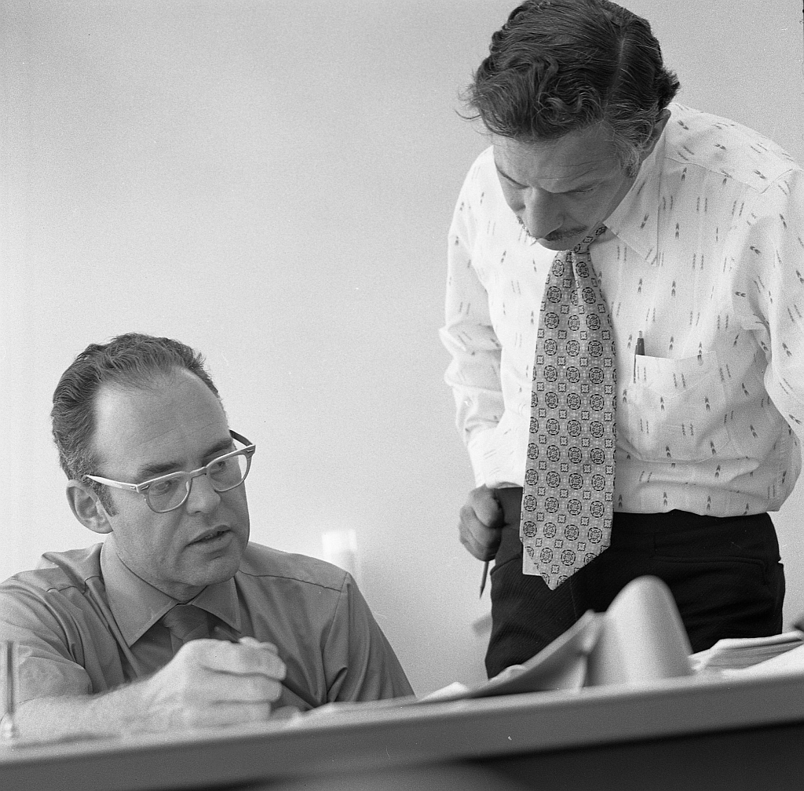

THE BEGINNING
1968
Intel Is Founded
Robert Noyce and Gordon Moore rename the newly formed company NM Electronics to Intel Corporation, laying the foundation for decades of technological innovation.
Every sustainability journey starts with the choices built into a company. Intel's early focus on innovation would later make it possible to rethink how computing is designed and manufactured.